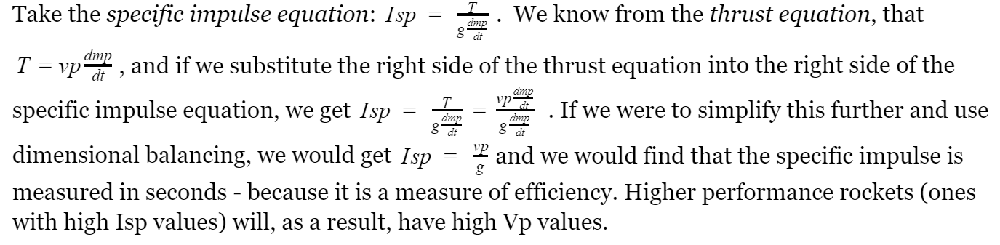

There are 3 considerations that need to be made when making the choice on what kind of system is going to be used to power the rocket. The first is impulse. It is essentially the amount of “push” the fuel delivers. The next is how much does the fuel weigh. A heavy fuel would be inefficient for certain rocket engines, but would work perfectly for others. And the final thing to consider is safety.
One option is to essentially build a firework; the equivalent of a solid propellant engine. Another is to use cryogenic liquids, which are the basis of liquid propellant engines. The final option is to use hypergolic mixtures, which spontaneously combust. These are typically violent reactions, but produce the most thrust.
The high pressures and temperatures of the combustion of the propellants (reactants) produce exhaust gases. These gases are accelerated through a rocket nozzle to provide thrust. There are two things that must be considered: nozzle and propellants (shown above). The design of the nozzle dictates the weight flow rate, exit pressure and exhaust velocity for a given initial temperature and pressure - which are determined by the properties of the propellants.

The oxidizer and fuel are already mixed together but are put in a cryogenic state inside the combustion chamber, so as to keep them from reacting. This solid is known as the propellant grain. The rate at which the reaction between the two substances occurs is dictated by the surface area of the grain that is exposed, as well as the type of fuel chosen. As shown in the diagram below, there is a hollowed out portion of the chamber to maximize the amount of exposed grain. Interestingly, to maintain a constant combustion rate with even thrust, a star-shaped hollow section is used within the combustion chamber.

In this engine, both the oxidizer and fuel are kept in separate tanks so as to keep them from reacting combusting. Both are sent into their respective pumps and are then shot into the combustion chamber. The high velocity, as well as the high concentration of each substance, grants a high likelihood of effective collisions, and in turn, a higher chance of combustion. An advantage of such a system is that the thrust from the engine can be controlled; the velocity at which the fuel is shot into the combustion chamber can be controlled.

This system has the fuel in the solid-state, and the oxidizer in the liquid state, both stored in separate tanks. The oxidizer is stored at a constant temperature and pressure. When the valve, separating the oxidizer and fuel is opened, this oxidiser is released into the combustion chamber. It then reacts with the solid fuel before being ejected.
ISP (specific impulse) essentially boils down to a measure of efficiency. It is defined as the thrust divided by the rate at which the weight of the fuel is consumed in order to produce that thrust. There are variations of specific impulse such as density specific impulse which considers the size of the fuel, as opposed to the mass. However, when dealing with rockets, density specific impulse is disregarded and mass specific impulse is taken. It is an especially good performance measure for engines that might be used to launch vehicles into space. For a launch vehicle, the goal is to produce as much thrust as possible with the least amount of fuel.
Based on the specific impulse equation, a high thrust in turn means a high Isp value. The higher the Isp value, the better use we can make out of the fuel to change our velocity. There is a caveat to this however, some types of propulsion systems can give very high specific impulse values, but a low absolute value of thrust - sometimes not enough to overcome the weight or the drag of the rocket. As a result, we would use an engine with a lower specific impulse, but that gives a high value of thrust.